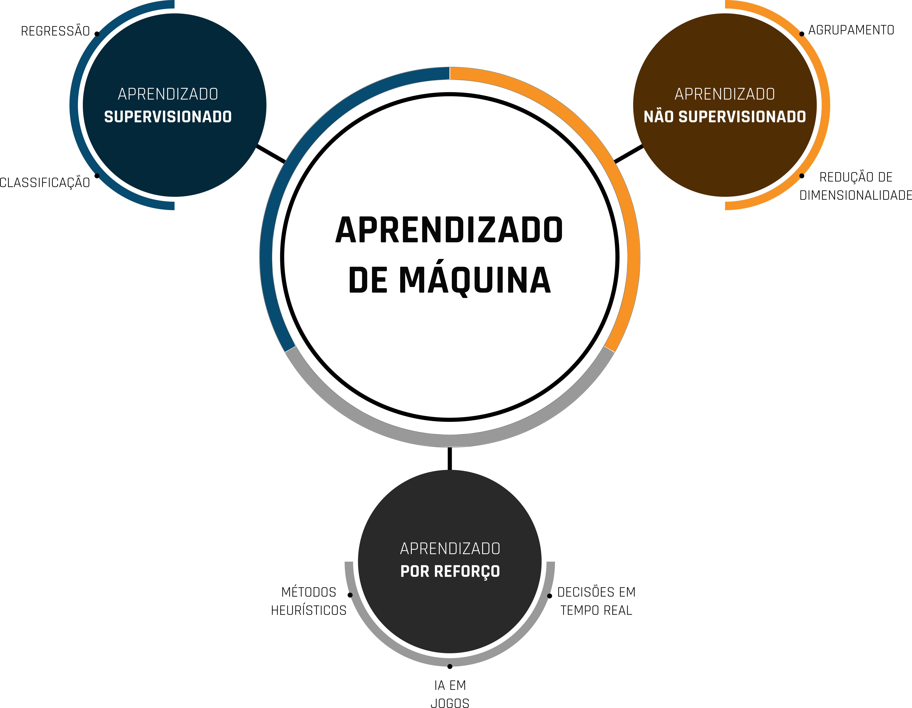
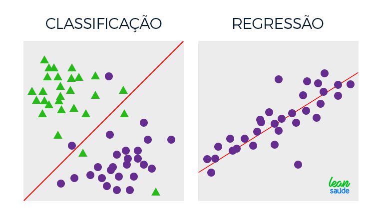

Tipos

Na prática, o Machine Learning possui 3 tipos de variações, que definem diferentes tipos de aprendizado. Eles são:
Aprendizado Supervisionado
Nesse tipo de aprendizado, os algoritmos são treinados usando um conjunto de dados rotulados, ou seja, cada exemplo de treinamento é acompanhado de uma resposta correta. O objetivo do algoritmo é aprender a mapear as entradas para as saídas corretas, de modo que possa fazer previsões precisas para novos dados. Exemplos de algoritmos de aprendizado supervisionado incluem regressão linear, regressão logística, máquinas de suporte vetorial (SVM) e redes neurais.
O aprendizado de máquina supervisionado é uma abordagem na qual o algoritmo é treinado com um conjunto de dados rotulado, ou seja, dados que incluem pares de entrada e saída desejada. Nesse contexto, alguns dos algoritmos fundamentais são K-Nearest Neighbors (KNN), Modelos Lineares e Classificadores Bayesianos.
i. K-Nearest Neighbors (KNN):
O K-Nearest Neighbors é um algoritmo simples e intuitivo que se baseia na ideia de que instâncias semelhantes tendem a existir próximas umas das outras. O funcionamento do KNN é direto: dado um novo ponto de dados, o algoritmo identifica os "k" pontos mais próximos no conjunto de treinamento e atribui a classe mais comum entre esses vizinhos ao novo ponto. O KNN é amplamente utilizado em problemas de classificação e regressão, sendo especialmente útil em situações onde a estrutura dos dados é complexa ou não linear.
ii. Modelos Lineares:
Os Modelos Lineares constituem uma classe de algoritmos que assume uma relação linear entre as variáveis de entrada e a saída. Em seu formato mais simples, um modelo linear realiza uma combinação linear dos atributos de entrada, adiciona um termo de viés (intercept) e produz uma saída. Este modelo é particularmente eficaz quando a relação entre as variáveis é aproximadamente linear. Regressão Linear e Regressão Logística são exemplos comuns de Modelos Lineares, utilizados para prever valores contínuos ou realizar classificação binária, respectivamente.
iii. Classificadores Bayesianos:
Os Classificadores Bayesianos são fundamentados no teorema de Bayes e na probabilidade condicional. Esses algoritmos calculam a probabilidade de uma instância pertencer a uma classe específica com base na probabilidade das características observadas. O Classificador Naive Bayes é um exemplo proeminente dessa categoria, assumindo a independência condicional entre os atributos, simplificando assim o cálculo das probabilidades. Essa abordagem é eficiente e funciona bem em conjuntos de dados de alta dimensionalidade. Os Classificadores Bayesianos são amplamente utilizados em tarefas de classificação, como filtragem de spam e diagnósticos médicos.
Em resumo, esses algoritmos de aprendizado supervisionado oferecem abordagens distintas para lidar com diferentes tipos de dados e cenários. A escolha entre eles dependerá das características específicas do problema em questão, como a natureza dos dados, a complexidade da relação entre variáveis e os requisitos de desempenho do modelo.
Aprendizado Não Supervisionado
Nesse caso, os algoritmos são treinados em um conjunto de dados não rotulados, o que significa que não há respostas corretas fornecidas. O objetivo é descobrir padrões ou estruturas ocultas nos dados sem a necessidade de rótulos. Os algoritmos de aprendizado não supervisionado são usados para agrupar dados semelhantes (clusterização) ou reduzir a dimensionalidade dos dados. Esta forma de aprendizado inclui análise de cluster e autoencoders.
Os algoritmos de aprendizado não supervisionado exploram a estrutura e padrões intrínsecos nos dados sem depender de rótulos pré-existentes. Duas abordagens notáveis nesse domínio são o K-means Clustering e os Mapas Auto-organizáveis (Self-Organizing Maps).
i. K-means Clustering:
O K-means é um dos algoritmos de clustering mais amplamente utilizados. Sua principal tarefa é agrupar um conjunto de dados em k clusters, onde cada cluster é representado pelo seu centróide, que é a média dos pontos de dados no cluster. O algoritmo itera entre atribuir pontos ao cluster mais próximo e recalcular os centróides até que a convergência seja alcançada. K-means é eficiente e fácil de entender, sendo aplicado em uma variedade de contextos, como segmentação de clientes, compressão de imagem e reconhecimento de padrões.
ii. Self-Organizing Maps (SOM):
Os Mapas Auto-organizáveis são uma classe especial de redes neurais que visa mapear dados de alta dimensão em uma grade bidimensional ou tridimensional de forma topologicamente organizada. A característica distintiva dos SOMs é a capacidade de preservar as relações espaciais entre os dados durante o processo de treinamento. Cada nó na grade representa um neurônio e está associado a um vetor de peso. Durante o treinamento, os neurônios ajustam seus pesos para representar características importantes do conjunto de dados. SOMs são frequentemente utilizados para visualização de dados complexos e redução de dimensionalidade, facilitando a identificação de padrões e clusters.
Ambos os algoritmos, K-means e SOM, são fundamentais no aprendizado não supervisionado, fornecendo meios eficazes de explorar a estrutura subjacente nos dados. A escolha entre eles dependerá das características específicas do problema em questão, como a natureza dos dados, a dimensionalidade e a complexidade das relações a serem identificadas. O K-means é mais adequado para problemas de clustering simples, enquanto os SOMs são especialmente úteis quando a topologia dos dados é uma consideração importante.
Aprendizado por Reforço
Nesta forma, os algoritmos aprendem através da interação contínua com um ambiente. O agente de aprendizado recebe feedback na forma de recompensas ou penalidades após ações executadas em determinado contexto. O objetivo do agente é aprender a tomar decisões que maximizem a recompensa ao longo do tempo. O aprendizado por reforço é frequentemente usado em jogos, robótica, otimização e outras áreas onde as ações são sequenciais e têm consequências a longo prazo.
O aprendizado por reforço é um paradigma no qual um agente interage com um ambiente, toma decisões sequenciais e recebe feedback na forma de recompensas ou penalidades. O objetivo é que o agente aprenda a tomar ações que maximizem as recompensas ao longo do tempo. Um algoritmo de aprendizado por reforço notável é o Q-Learning.
i. Q-Learning:
O Q-Learning é um algoritmo de aprendizado por reforço que pertence à classe dos métodos de aprendizado de valor. Ele é particularmente eficaz em ambientes nos quais o agente não possui conhecimento prévio sobre o ambiente e deve aprender por tentativa e erro. O Q-Learning estima a qualidade (ou valor) de cada par estado-ação, representado pela função Q.
O processo de aprendizado envolve a atualização iterativa dos valores Q com base nas recompensas recebidas pelo agente. O algoritmo utiliza uma fórmula de atualização que leva em consideração a recompensa instantânea, a estimativa do valor máximo futuro (utilizando a função Q) e um fator de desconto para considerar a importância do futuro em relação ao presente.
O Q-Learning é especialmente aplicado em problemas nos quais o agente pode explorar diferentes ações e aprender uma política ótima ao longo do tempo. Ele tem sido utilizado em uma variedade de domínios, desde jogos até controle de robôs, e é uma base para muitos algoritmos mais avançados de aprendizado por reforço.
No processo de treinamento, o Q-Learning permite que o agente aprenda ações que resultam em recompensas mais altas, ajustando gradualmente suas estimativas de valores Q. Esse tipo de abordagem é poderoso em cenários nos quais é difícil definir um conjunto de regras explícitas para o agente seguir, permitindo que ele descubra estratégias eficientes por conta própria.
Classificação e Regressão

As aplicações do Aprendizado Supervisionado geralmente se concentram em 2 tipos: problemas de classificação e problemas de regressão.
Na classificação, objetiva-se taguear adequadamente os sujeitos de teste em determinada categoria de interesse, e na regressão, objetiva-se chegar a um valor numérico contínuo como resultado.
i. Extração de Características:
A Extração de Características é um processo crucial em problemas de classificação e regressão. Consiste em identificar e selecionar as informações mais relevantes dos dados brutos, transformando-os em um formato mais adequado para análise. Este processo ajuda a melhorar a eficiência computacional, reduzir a dimensionalidade e, em muitos casos, aprimorar o desempenho do modelo. Métodos comuns incluem técnicas estatísticas, transformações matemáticas e algoritmos de aprendizado não supervisionado, como Análise de Componentes Principais (PCA) para redução de dimensionalidade.
ii. Pré-processamento:
O Pré-processamento de dados é uma etapa fundamental para garantir a qualidade e eficácia dos modelos de classificação e regressão. Isso inclui a limpeza de dados (tratamento de valores ausentes e outliers), normalização (garantindo que as variáveis estejam na mesma escala), codificação de variáveis categóricas, e outras técnicas para preparar os dados para o treinamento do modelo. O pré-processamento contribui para evitar vieses indesejados, melhorar a interpretabilidade e acelerar o treinamento dos modelos.
iii. Overfitting e Underfitting:
Overfitting: O Overfitting ocorre quando um modelo se ajusta muito bem aos dados de treinamento, capturando não apenas os padrões verdadeiros, mas também o ruído e as variações aleatórias nos dados. Isso leva a um desempenho subótimo em dados não vistos, pois o modelo se torna excessivamente complexo. Estratégias para lidar com o overfitting incluem a redução da complexidade do modelo, a coleta de mais dados de treinamento ou a aplicação de técnicas como regularização.
Underfitting: O Underfitting, por outro lado, ocorre quando o modelo é muito simples para capturar as relações nos dados de treinamento. Isso resulta em um desempenho inadequado, pois o modelo não consegue aprender os padrões complexos presentes nos dados. Soluções para o underfitting incluem a escolha de modelos mais complexos, a coleta de mais dados ou o ajuste de hiperparâmetros.
O equilíbrio entre extração de características, pré-processamento e a gestão de overfitting e underfitting desempenha um papel crucial no desenvolvimento de modelos de classificação e regressão robustos e generalizáveis. A seleção cuidadosa dessas técnicas pode melhorar significativamente a capacidade do modelo de aprender padrões úteis nos dados e realizar previsões precisas em novos conjuntos de dados.